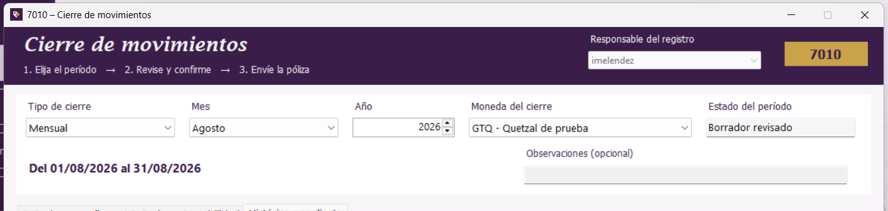

|


|
|
|
Seleccione Tipo de cierre, Mes, Año y Moneda del cierre. La franja inferior muestra las fechas exactas del período. Un cierre mensual debe ser de un mes ya terminado; los cierres se confirman en orden.

El período se elige en la parte superior. Pulse la imagen para ampliarla.
Dos botones Guardar: el de la barra inferior solo conserva un borrador. El botón Confirmar cierre, dentro de la primera pestaña, es el que cierra el período. Guardar un borrador no permite enviar la póliza.
| Estado visible | Qué significa |
|---|---|
| Borrador revisado | Los saldos fueron revisados, pero todavía debe marcar la constancia y confirmar el cierre. |
| Cerrado | El período ya se confirmó; revise la partida contable. |
| Confirmado por Contabilidad | El envío terminó. Consulte el código y la fecha de traslado. |